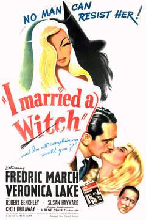

Watching Halloween movies is an essential part of the holiday experience, but not everyone can handle the level of terror that the majority of typical Halloween movies have to offer. Whether you're making a selection for family movie night, uninterested in gore and screams, or just trying to find a movie to watch while trick-or-treaters stop by your house, this list will help you find a film that won't offend your delicate sensibilities, or those of any little ones in your household.
*Films on this list are ranked on a scale of 1 to 10, 1 being only slightly scary and 10 being terrifying. This rating is meant to reflect the probable opinion of a child or easily scared person viewing this film.
House on Haunted Hill
This 1959 classic features Vincent Price as an eccentric millionaire offering five people $10,000 if they can spend the entire night in a supposedly haunted mansion. Vincent Price gives an excellent performance alongside a cast of talented character actors. Very fun, campy, and available for free on most streaming services!
Scare factor: 2/10
Beetlejuice
This 1988 Tim Burton film stars Alec Baldwin and Geena Davis as a young married couple who, after dying in an accident, must now haunt the new occupants of their charming farmhouse, with the help of a shady character played by Michael Keaton. So fun, amazing cinematography, and features one of the best dance sequences known to man.
Scare factor: 3/10

I Married A Witch
A romantic comedy made in 1942, this film concerns an witch executed in Puritan times who returns to life in order to exact revenge on the descendant of her killer, but accidentally falls in love with him instead. Veronica Lake is absolutely adorable as Jennifer the witch, as is Fredric March as her love interest Wally. Sweet, light, silly fluff with a slight aftertaste of Halloween.
Scare factor: 0/10
Poltergeist
While this 1982 thriller may seem like too much for your delicate sensibilities, the influence of writer and producer Steven Spielberg prevents it from ever crossing over into truly scary territory. Concerning a SoCal family who finds that their new suburban home is haunted, this one will keep you on the edge of your seat without making you pee your pants.
Scare factor: 6/10

Frankenstein
This 1931 classic is the blueprint for many modern horror favorites. Due to changes from the source material, this movie takes on a more tragic tone than a terrifying one. Boris Karloff gives a genre-defining performance as the Creature; everyone should see Frankenstein at least once in their life.
Scare factor: 1/10
Young Frankenstein
This 1974 Mel Brooks offering provides a humorous take on the trusty scientist/creature archetype established in Frankenstein. Gene Wilder, most famous for his protrayal of Willy Wonka, stars as a descendent of the original Dr. Frankenstein, who must return to his grandfather's homeland in order to collect his inheritance upon the elder Frankenstein's passing. An absolutely hilarious take on some traditional Halloween concepts.
Scare factor: 0/10
Hocus Pocus
More of a Halloween-themed comedy film, this 1993 selection makes a great showing for an October family movie night. Its plot centers around three kids, a talking cat, and their quest to save their town from three witches, played marvelously by Bette Midler, Kathy Najimy, and Sarah Jessica Parker. Great for younger children who need a bit more adventure to hold their attention, but still very fun for adults.
Scare factor: 0/10
Scooby-Doo!
and the Witch's Ghost
This 1999 entry in the Scooby-Doo canon features the Mystery Gang visiting a haunted Massachusetts town to investigate a famous horror author. Also features one of the most iconic appearances of the Hex Girls in a Scooby-Doo film. This family film offers more in the way of fall ambience than spookiness, making it great for family gatherings or children's parties.
Scare factor: 1/10
Blithe Spirit
This 1945 comedy directed by David Lean and adapted from one of his own plays stars Rex Harrison as a man whose current marriage is threatened by the return of his late wife as a ghost. Featuring hilarious dialogue and some impressive early practical effects, Blithe Spirit is a great option for a more mature comedy film come Halloween.
Scare factor: 0/10
The Sixth Sense
This acclaimed 1999 mystery film is boosted by stellar performances by Bruce Willis and Toni Collette. Concerning a child psychiatrist tasked with helping a child who believes he can see ghosts, the twist at the end of this movie is characteristic of director M. Night Shyamalan's work. A complex thriller with a shocking final reveal that went down in pop culture history, this one is a must-see for viewers desiring a more elaborate film to occupy them this Halloween.
Scare factor: 4/10
What We Do in the Shadows
Fans of adult comedy won't want to miss What We Do in the Shadows. This 2014 offering from acclaimed New Zealand director Taika Waititi (Thor: Ragnarok, Hunt for the Wilderpeople) and Jemaine Clement (Flight of the Concords) details the exploits of a ragtag group of vampires residing in Wellington, New Zealand. Filmed as a faux-documentary, this film will keep you laughing for duration of its 86 minute runtime.
Scare factor: 1/10
Monster House
This underappreciated animated film was released in 2006, and 16 years later, it still holds up. Its plot concerns 12 year old DJ, who, with the help of his best friend Chowder and a neighborhood girl named Jenny, realizes the house across the street from him is alive and must be destroyed to save their town. Stacked with a star-studded voice cast, this movie is highly engaging for younger children, and older kids and adults will enjoy the hilarious dialogue.
Scare factor: 3/10